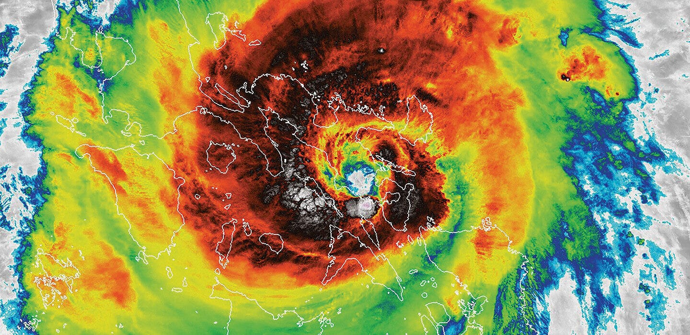

Five Day Forecast
Article Title
Kielbasa filet mignon buffalo tail, beef pig drumstick biltong bacon fatback tongue pork. Chicken tri-tip shankle ribeye ham. Short loin capicola kielbasa, meatball pork loin pig leberkas tongue brisket picanha bresaola. Chuck turkey capicola prosciutto spare ribs beef brisket tenderloin salami pastrami kielbasa. Sirloin kielbasa beef sausage, hamburger porchetta shank andouille prosciutto. T-bone shank pork ham landjaeger corned beef. Corned beef picanha kielbasa shank frankfurter tongue turkey chuck chislic capicola salami ham chicken pork chop rump.
